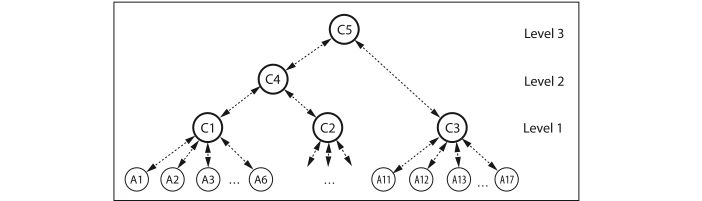

Checkpointing
Actors provides a simple mechanism for taking user-defined checkpoints/copies of variables and restoring them on demand. This can be used together with actor and task supervision to restart failed computations from a previously saved state.
Why do we need checkpointing in addition to supervision? If for example a computing node fails, a supervisor does not receive an error message with the last state of a failed actor. It must be able to restart an actor on another node with a state saved somewhere else.
We conceive actor-based checkpointing as sending copies of variables over a link (a Channel) to a checkpointing actor. There is no stopping of an actor/task/process/application from the outer system or taking copies of an actors' (shared) state.
The user must checkpoint critical variables regularly and restore them within init! and restart callbacks (described in supervision). This enables computations to recover from node failures. We must develop appropriate patterns for using this kind of checkpointing.
Multi-level Checkpointing
Checkpointing actors can be grouped into a hierarchy of several levels. This allows their subordinated actors or tasks to be restarted from a common state. This is similar a kind of multi-level checkpointing:
Multi-level checkpointing ... uses multiple types of checkpoints that have different levels of resiliency and cost in a single application run. The slowest but most resilient level writes to the parallel file system, which can withstand a failure of an entire machine. Faster but less resilient checkpoint levels utilize node-local storage, such as RAM, Flash or disk, and apply cross-node redundancy schemes. [1]
All checkpointing actors have a Dict (in-memory) for checkpoints, which they can save to a file and reload. They are isolated from one another and their location (e.g. a worker pid) can be chosen according to redundancy and efficiency considerations.
A hierarchy of checkpointing actors may look like the following:

C1 .. C3 take level 1 checkpoints from connected worker actors A1 .. A17. C4 is at level 2 and updates regularly its dictionary from checkpoints of actors A1 .. A10. C5 updates regularly from C3 and C4. Depending on the failure and the supervisory strategy the system can recover from checkpoints on various levels. Maybe C5 saves its checkpoints to disk. Thus the whole system could be restarted from that.
Level One
A checkpointing actor at level=1 operates as server for worker actors or tasks. On checkpoint it stores values from current computations under a key and can restore them on demand. It usually resides on the same node as its clients and can take frequent and inexpensive checkpoints.
Higher levels
Checkpointing actors at levels > 1 aggregate and save checkpoints from actors below them periodically or at demand. They usually reside on other nodes and save checkpoints to a file system. If desired, the highest level actor can save and serve the checkpoints of an entire distributed application.
Checkpointing API
| API function | brief description |
|---|---|
checkpointing | start a checkpointing actor, |
checkpoint | tell it to take a checkpoint, |
restore | tell it to restore the last checkpoint, |
register_checkpoint | register it to another higher level one, |
@chkey | build a checkpointing key, |
set_interval | set the checkpointing periods, |
get_interval | get the checkpointing periods, |
start_checkpointing | start periodic checkpointing, |
stop_checkpointing | stop the periodic checkpointing, |
get_checkpoints | get (a Dict of) all checkpoints, |
save_checkpoints | tell it to save the checkpoints to a file, |
load_checkpoints | tell it to load them from a file. |
- 1Adam Moody, Greg Bronevetsky, Kathryn Mohror, Bronis R. de Supinski, Design, Modeling, and Evaluation of a Scalable Multi-level Checkpointing System, LLNL-CONF-427742, Supercomputing 2010, New Orleans, LA, November 2010.